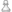
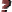

Game markers
A marker is an indicator of some chess characteristic that can be turned
on or off for each game in the database. There are 21 user-settable markers that
markers that one may set for each game. These markers will be used used mainly as
part of complex searches in the database, or for game list filter purposes. Since all
the user-settable markers have no significance, you can use them for any purpose that
suits your needs.
The markers and their symbols in detail:

::gametable::mc::GameFlags(w)- ::gametable::mc::GameFlags(b)
- ::gametable::mc::GameFlags(m)
- ::gametable::mc::GameFlags(e)
- ::gametable::mc::GameFlags(N)
- ::gametable::mc::GameFlags(p)
- ::gametable::mc::GameFlags(T)
- ::gametable::mc::GameFlags(K)
- ::gametable::mc::GameFlags(Q)
- ::gametable::mc::GameFlags(!)

::gametable::mc::GameFlags(?)- ::gametable::mc::GameFlags(U)
- ::gametable::mc::GameFlags(*)
- ::gametable::mc::GameFlags(D)
- ::gametable::mc::GameFlags(G)
- ::gametable::mc::GameFlags(S)
- ::gametable::mc::GameFlags(^)
- ::gametable::mc::GameFlags(~)
- ::gametable::mc::GameFlags(=)
- ::gametable::mc::GameFlags(M)
- ::gametable::mc::GameFlags(P)
- ::gametable::mc::GameFlags(I)
 ::gametable::mc::GameFlags(X)
::gametable::mc::GameFlags(X)
The last two markers are not user-settable, they will be set automatically if a
game contains illegal castlings or even other illegal moves (for example the king
is moving into check) within the main line. If a game is marked with both only
the marker ::gametable::mc::GameFlags(I) will be displayed.
There are also special markers which are not user-settable, the deletion
marker, the changed marker, and the newly added marker. A game marked with the
deletion marker will be removed when next the database is compacted
(⇒ Database switcher:
Compact). This marker will be retained
after closing the database. The changes marker means that this game has been
changed (and saved), and the newly added marker is denoting a newly added game.
Both markers will be lost as soon as the database is closed.
When editing games from Scid databases (.si4) Scidb is supporting the six special
user defined markers (1..6). But it is recommended not to use these markers, because
unsolvable problems will ocurr when copying games to other databases; even the
application Scid cannot solve these problems.
When reading ChessBase databases both markers
::gametable::mc::GameFlags(s) and
::gametable::mc::GameFlags(t)
will be mapped to the common marker ::gametable::mc::GameFlags(?).
Scidb does not distinguish between these two characteristics.